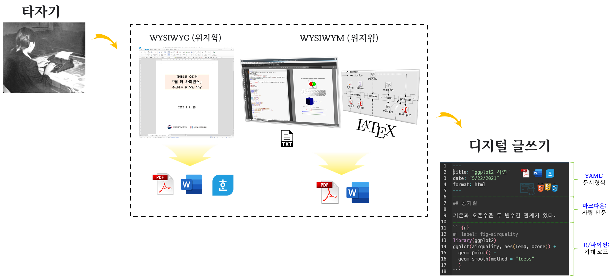

1 디지털 문서 제작 패러다임
신속하고 빠르게 누구나 짧은 학습을 통해서 문서를 저작하고 출판할 수 있는 방식으로 인기를 얻은 아래한글 혹은 MS워드 워드프로세서를 사용하는데 이는 위지위그(WYSIWYG: What You See Is What You Get, “보는 대로 얻는다”)에 기초한 것으로 문서 편집 과정에서 화면에 포맷된 낱말, 문장이 출력물과 동일하게 나오는 방식이다. 이전 타자기 대비 경쟁력이 있었고 이를 바탕으로 문서편집기 소프트웨어가 대세로 떠올랐다.
위지윅의 대척점에 있는 것이 위지윔(WYSIWYM, What You See Is What You Mean)으로 대표적인 것인 \(\LaTeX\) 으로 구조화된 방식으로 문서를 작성하면 컴파일을 통해서 최종 문서가 미려한 출판가능한 PDF, PS, DVI 등 확장자를 갖는 출판결과물을 얻을 수 있다.
\(\LaTeX\)이 갖는 장점은 이제 프로그래밍 코드(R/파이썬/SQL/쉘스크립트/자바스크립트 등)을 문서저작에 포함되며 literate programming 패러다임이 대세로 떠올랐고 현존하는 다양한 문서저작 문제에 대한 응답으로 자리를 매김하고 있다.

2 문서로 보는 민주주의
대한민국은 권력을 입법권, 행정권, 사법권으로 나눠 권력을 나누었다. 세부적으보 보면 다소 차이는 있겠지만 법을 만드는 것은 결국 문서를 저작하는 것이고 대한민국 정부는 법에 담긴 문서를 실행하는 기관이고 사법부는 법 문서를 해석하는 기관으로 볼 수 있다. 결국 민주주의는 문서를 기반으로 존립하는 사회체계라고 볼 수 있다. 최근 들어 인공지능이 부상하면서 문서저작을 보조하던 수단에서 이제는 사람보다 더 나은 통찰력을 보이는 분야도 속속 등장하고 있다. 이런 측면에서 인공지능 기계를 현 민주주의 체계 내에 어떻게 녹여낼 것인지 관심이 높아지고 있다.

3 디지털 문서 저작
과거 둘로 쪼개져서 과학기술 문서저작 즉 논문 등은 \(\LaTeX\) 기반 위지윔(WYSIWYM) 패러다임이 확고한 자리를 잡았지만 위지위그(WYSIWYG) 패러다임 기반 아래한글 워드와 같은 문서저작편집기 성능이 높아지면서 사실상 둘 사이 경계도 허물어졌다.
하지만, 과학기술 논문 저작에 진실성, 재현성 등이 강조되고 빅데이터 기반 과학연구가 큰 성과를 보이고 프로그래밍이 과학기술 논문 저작에 주요한 역할을 하면서 이런 추세를 반영한 과학기술 저작 패러다임이 떠오르고 있다.
이러한 추세를 반영한 도구의 발전도 함께 이뤄지면서 과학기술 저작은 물론 거의 모든 문서 저작분야에 큰 변화가 일어나고 있다.